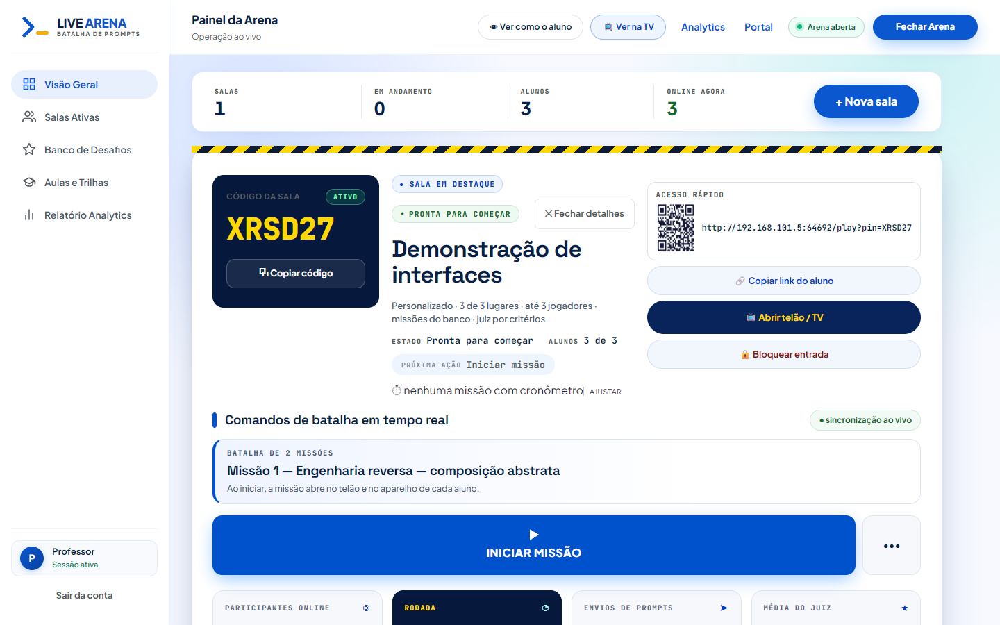
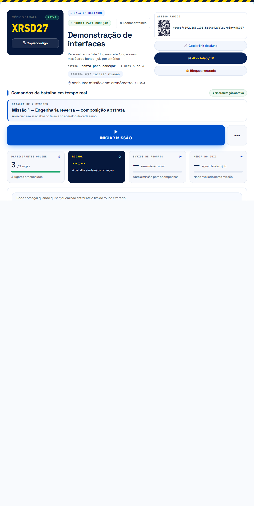
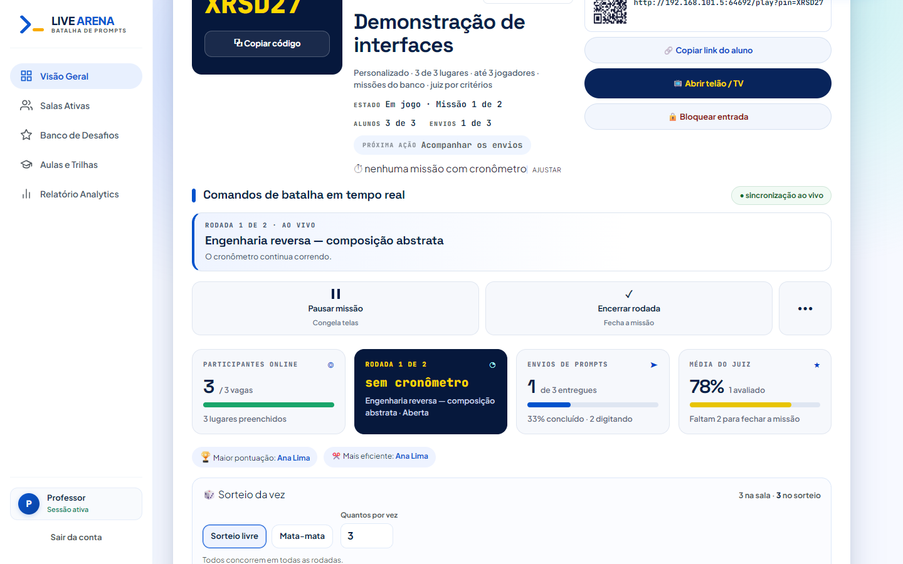
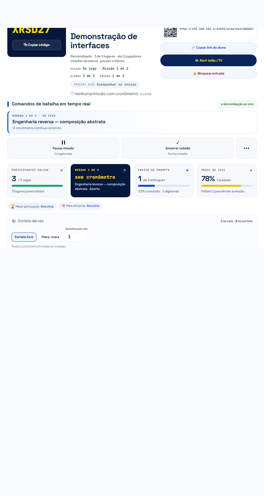
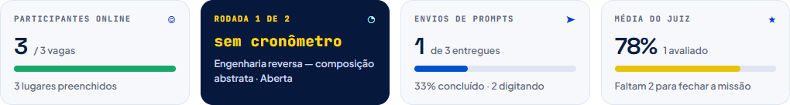
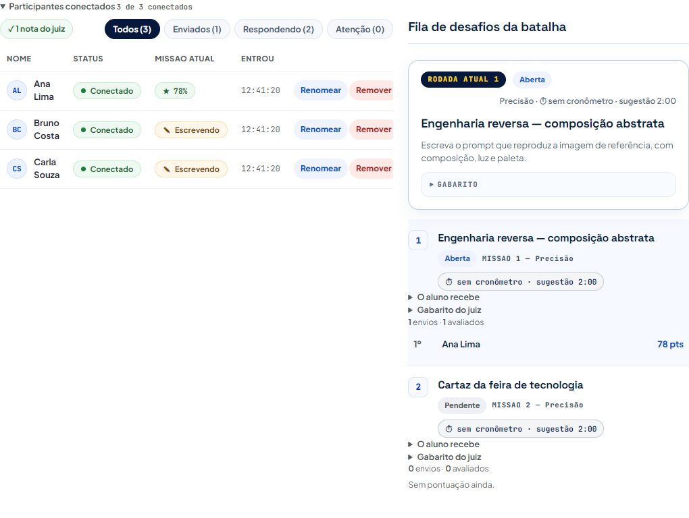
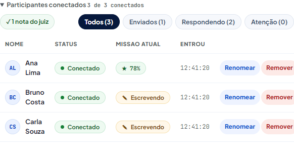
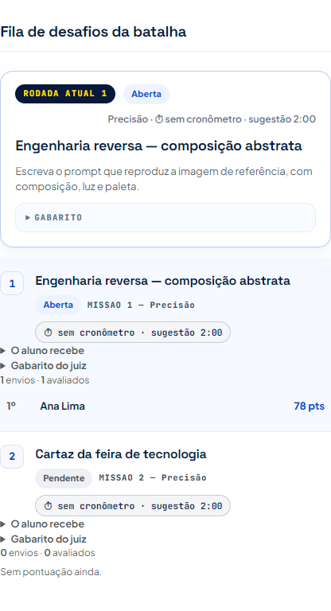

Sala em destaque no desenho da referência clara — 20/09/2026
Servidor próprio, banco em memória e juiz fixo (78%). Roteiro do professor: abre a sala, três alunos entram, ele inicia a missão e olha a tela nas cinco larguras.
1. O lobby — onde o professor procura o botão de começar

01 — o painel inteiro no lobby: bancada de comandos com o anúncio e o INICIAR MISSÃO

02 — o cartão da sala em destaque, do selo do código à bancada
2. Em jogo — a turma escrevendo

03 — o painel inteiro com a missão no ar

04 — a bancada: título, selo da sincronia, anúncio e ladrilhos de comando
3. As peças, de perto

05 — a faixa de indicadores (o cartão da rodada é o escuro, e um só)

06 — as duas colunas: participantes conectados à esquerda, fila de desafios à direita

07 — a lista de alunos: selo do juiz, filtros e a linha de cada um

08 — a missão em foco (imagem, missão e gabarito) e a fila de desafios